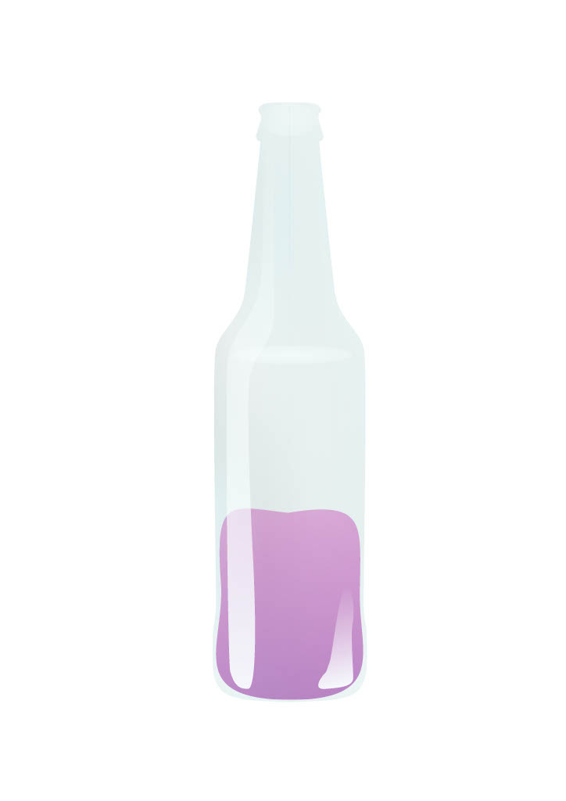
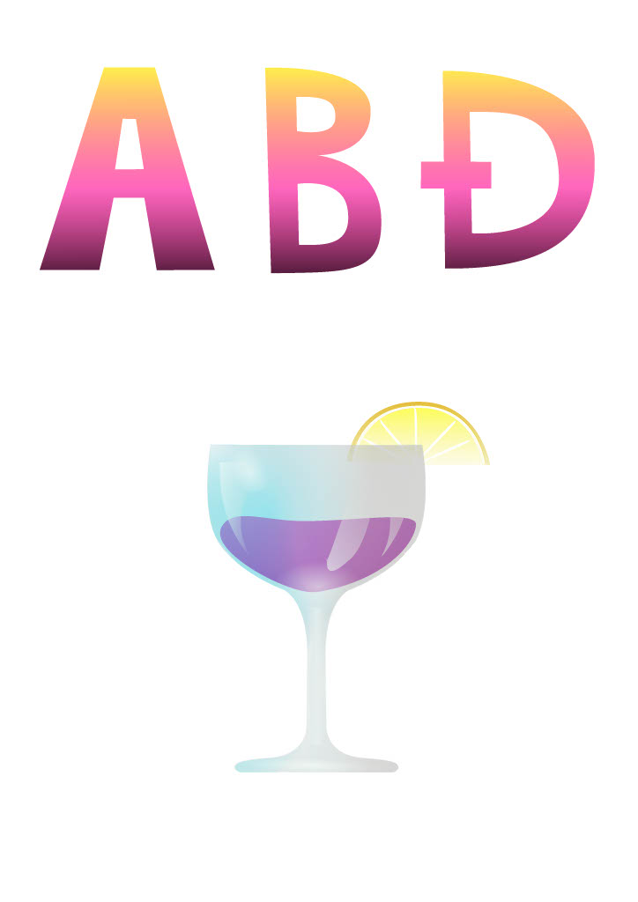
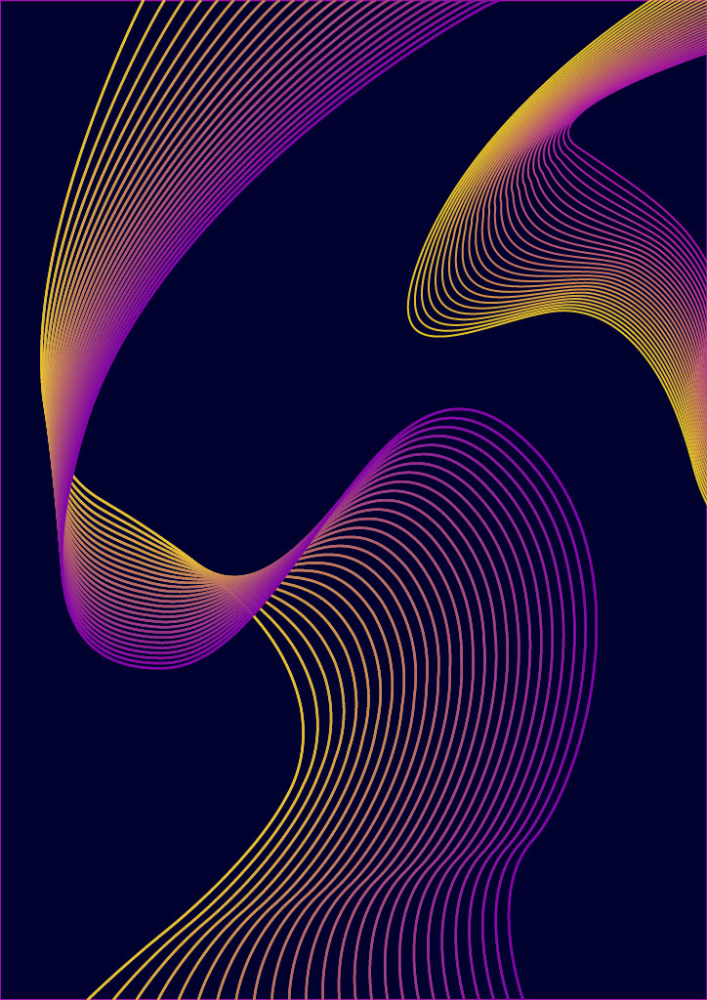
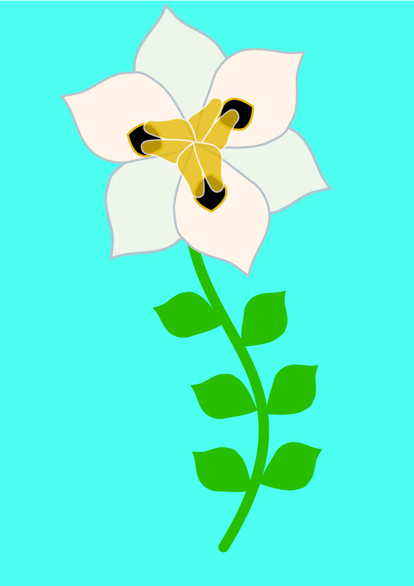
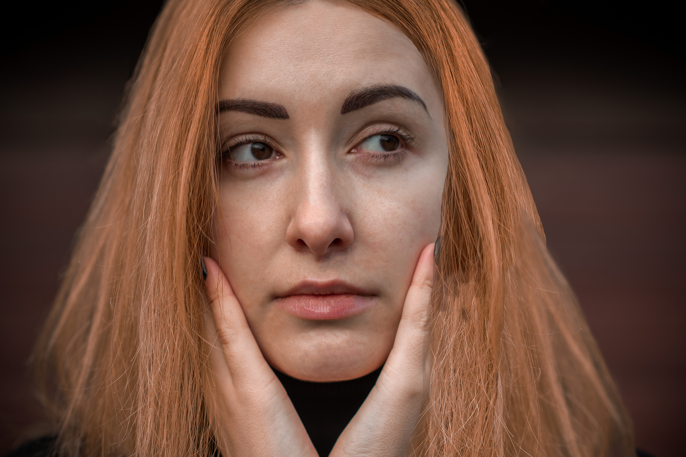
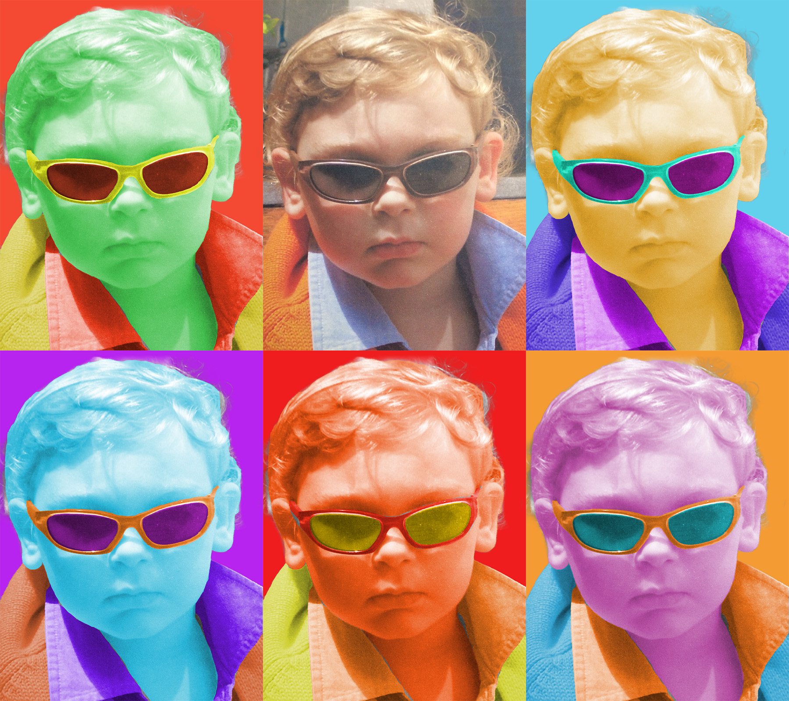
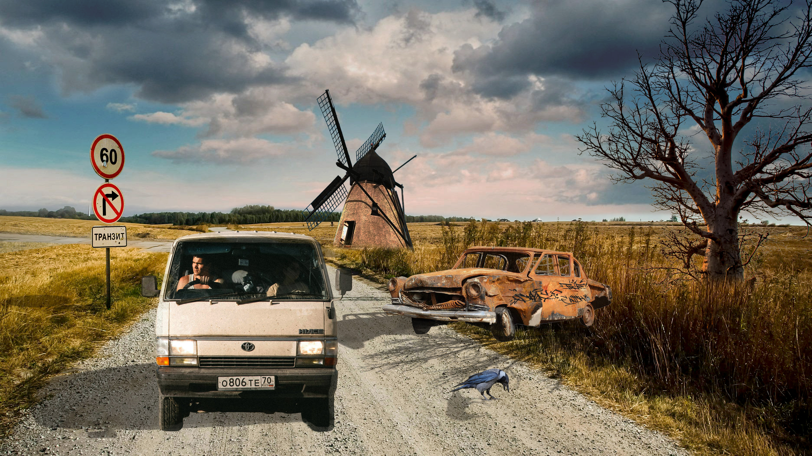

Vježbe iz kolegija Digitalni Multimedij
Vektorska Grafika
U ovom dijelu kolegija učili smo se koristiti alatima koji koriste vektorsku grafiku kao što su FontForge u kojem sam napravio svoj prvi font i Adobe Illustrator u kojem smo pomoću Bezierovih krivulja izrađivalji razne uzorke i ilustracije. Ovo su neki od meni najdražih radova koji su bili dio projekata za kolegij Digitalni multimedij.




Piksel Grafika
U drugom dijelu kolegiija bavili smo se piksel grafikom te u programu Adobe Photoshop na različite načine uređivali fotografije. Radili smo na retuširanju, kolorizaciji te fotomontaži.


